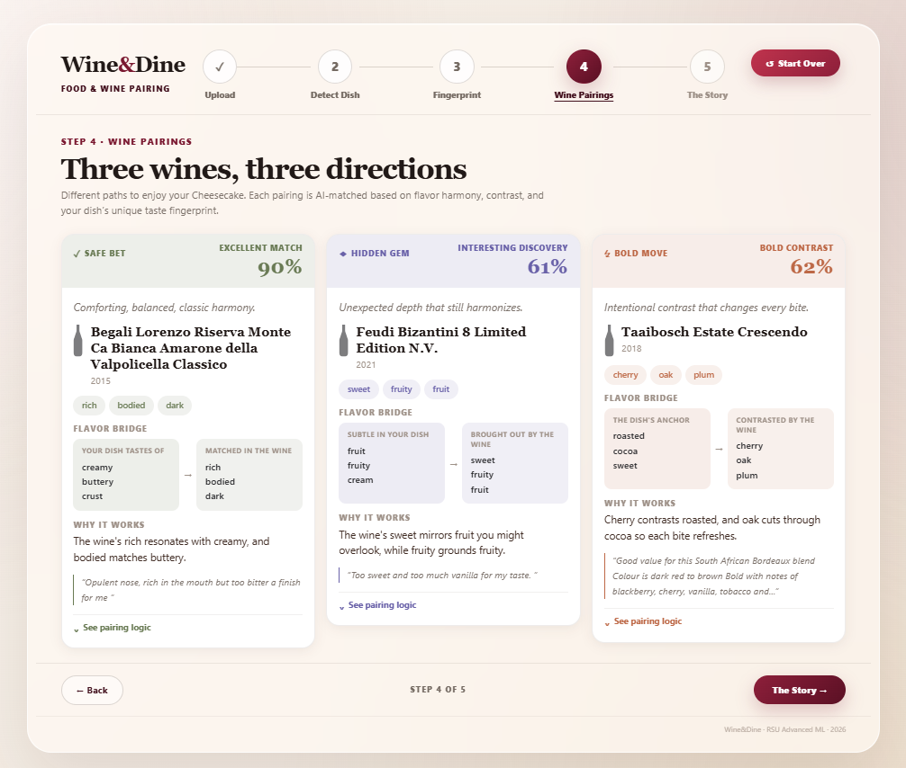

RSU · Advanced Machine Learning · Final Project 2026
A multimodal AI system that pairs wines to dishes from a single photo
Explore the journey ↓You're at a restaurant. The wine list has forty options and none of them mean anything to you. You pick something vaguely familiar, hope for the best, and move on.
Most people don't feel confident choosing wine to match food. The knowledge gap is real, and it's intimidating.
None of these start from what actually matters — what the food tastes like, right now, on your plate.
Wine & Dine removes the gap entirely. Photograph your dish. The system does the rest — no wine knowledge required.
To connect food and wine, we needed to understand both. Two public datasets and one custom bridge we created ourselves.
images
classes
per class
ETH Zurich benchmark. Real food photographs — variable resolution,
real-world noise. Loaded via torchvision datasets.
reviews
MB
grapes
NeurIPS 2023 dataset — real Vivino tasting notes. Top 15 grape varieties cover ~85% of all reviews.
dishes
per dish
total
Three LLM-generated food flavor descriptions per dish — classic, surprising, and contrasting — manually verified against culinary references.
Step 1 — Filter
From 824,000 raw tasting notes, five passes remove unusable rows.
Food-101 needs no cleaning — torchvision delivers 1,000 images × 101 classes, perfectly balanced.
Step 2 — Split
Both datasets split with a fixed seed, before any EDA — test-set statistics never touch architecture decisions.
Stratified by target class. Test set frozen — touched exactly once per model.
Step 3 — Balance
The two datasets present opposite challenges.
Food images — 101,000 photos
Wine reviews — 824,000 tasting notes
Accuracy on 101 food categories
Top-1 accuracy · 15,150 unseen test images · 101 food categories
How we got there
Accuracy identifying grape variety (15 classes)
15-class grape classification · WineSensed test set
What each model learned
Food photo → ResNet-50 → "Cheesecake"
Wine review → BiLSTM → "Sangiovese"
Two completely different vocabularies, two completely different models. We needed something in between — a shared space where a cheesecake and a Riesling could meet. So we tried. And tried again.
We already had 824,000 wine reviews. The plan: fine-tune Word2Vec, translate food keywords into wine vocabulary, compare to grape centroids. One model, one cosine score — done.
What we built
What actually happened
Seven doors. Same wall.
We weren't failing at the methods.
We were asking the wrong question.
The problem with grape labels is that they are names — not descriptions. Cabernet Sauvignon can be a hundred different taste experiences depending on terroir, vintage, and winemaker. The label compresses all of that into one point.
What if we trained on what wine actually tastes like — not what grape it is?
We picked 10 dimensions that cover how wine tastes: body, acidity, tannin, red fruit, fruit, earthy, sweet, oaky, floral, mineral. Think of them as 10 dials on a flavor control panel.
Multi-label classification targetsFor each dimension we listed the words that signal it. Oaky = oak, vanilla, toast, cedar, smoky. Written by hand — no model involved yet.
Keyword seed lists for weak supervisionLike a highlighter on every review. If it contains any oaky word → oaky fires. Multiple dials fire at once. Each review ends up with its own flavor signature — automatically, no human labeling needed.
Weak supervision → binary 10-dim label vectorsWe showed the neural network thousands of labeled reviews. It learned: when you see this language, these dials fire. After training it can read any text and predict the flavor profile on its own.
TasteBiLSTM — BiLSTM + Bahdanau attention, 10-axis output headThe 10 axes told the model what to learn. Internally it built a finer picture — 512 numbers per text. Similar tastes produce similar numbers. Different tastes point away from each other.
512-d L2-normalised hidden state, cosine range –0.097 to 0.841We ran all 824,000 wine reviews through the trained model. Each wine became a point in taste space — placed by how it tastes, not by grape name or price.
TasteBiLSTM encoder inference on full corpusThe math suggested 12 groups. We chose 9 — one per taste dimension — because it makes results explainable and avoids splitting real flavor profiles into noise.
BisectingKMeans K=9, silhouette 0.4757 vs K=12 at 0.4972We ran a text analysis on each group to find the most distinctive words. The machine named them automatically: "Something Bold", "Something Sweet", "Something Earthy & Smoky"...
TF-IDF on cluster review texts → top keyword → cluster nameFor every dish we wrote a plain English description of how it tastes — the same kind of language a wine review uses. "Warm, buttery, cinnamon-spiced, with a sweet caramelized edge." Written by an AI language model.
LLM-generated descriptions — Claude SonnetThe food description goes through the exact same model. It gets the same kind of 512-number taste address. Now food and wine live in the same space.
Cross-modal retrieval via shared embedding spaceFor the first time, a strawberry tart and a Pinot Noir can be neighbors — because they actually taste alike.
Cosine similarity between the food's taste vector and this specific wine's vector. Taste proximity — not a quality rating. 62% can be a better pairing than 90% if you want contrast.
cosine(food_vec, wine_vec)Not the same wine for every dish in the cluster. Cheesecake and pizza are both "something rich" — but their vectors point differently, so they get different wines from the same pool.
ranked per food vector, not cluster centroidThe words that scored highest in both the food description and the wine review. These are the specific flavor words that brought the two together.
TF-IDF overlap · food desc ∩ wine review
Highest cosine similarity to this food's exact vector inside the nearest taste cluster. The obvious match — and genuinely satisfying.
argmax cos(food, wine) in cluster₁Top-rated wine from the second-closest cluster. Similar enough to harmonize — different enough to reveal something unexpected.
top rating in cluster₂The farthest wine that still passes a rating floor. Contrast by design — every bite of food refreshes the palate.
inverse cosine sim · rating ≥ floorA real quote from the WineSensed dataset — 824,000 reviews. Selected as the one whose language most closely matched the flavor profile the model identified in the food.
highest TF-IDF overlap with food descriptionThe system's human-readable justification — the specific flavor words that appear in both the food description and the wine review, showing exactly what brought them together.
food desc keywords ∩ wine review keywordsYou upload any dish. The system takes it from there.
ResNet-50 classifies the image across 101 food categories, fine-tuned on Food-101.
76.5% top-1 accuracyThe dish name retrieves a one-sentence flavor profile — dominant character, a surprising note, a contrast suggestion — written in the same register as wine reviews.
101 LLM-generated descriptionsTasteBiLSTM reads that sentence — forwards, backwards, with attention — and compresses it into a single taste vector: the food's address in a shared food-wine space.
BiLSTM + Bahdanau attention · 512-d · L2-normalisedCosine similarity to 9 pre-built taste centroids names the profile and returns a confidence score: how close was this dish to its cluster?
BisectingKMeans · K=9 · silhouette 0.476 · 824k wine vectorsEach strategy picks from a pool of 10 pre-vetted wines per cluster, ranked against the exact dish vector — so two dishes in the same cluster still get different bottles.
RSU Advanced Machine Learning · Final Project 2026
Wine & Dine